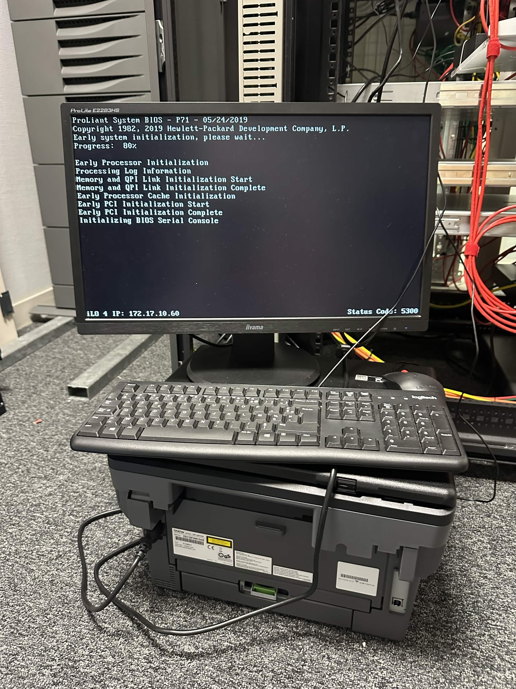

PRA : Un plan de reprise d'activité
1. Contexte & Objectifs
L’infrastructure système du groupe est majoritairement hébergée à l’extérieur (chez OVH). L’objectif est de mettre en place un Plan de Reprise d’Activité (PRA) au siège de l’entreprise (Sainte-Mère-Église) afin de garantir un temps d’interruption minimal en cas de sinistre chez l’hébergeur. Ce projet cible prioritairement les processus cruciaux de l’entreprise, en particulier l’ERP (Odoo).
Contraintes : Réalisation du projet avec un faible budget et en s’adaptant aux contraintes actuelles sur le matériel, notamment la mémoire vive (RAM).
2. Déroulé & Tâches réalisées
- Tâches 1 : Audit sur le matériel présent au siège et optimisation potentielle (matérielle).
- Tâches 2 : Remise en état du matériel, mise à jour et amélioration de la configuration matérielle.
- Tâches 3 : Installation et test de compatibilité d'un hyperviseur (Proxmox).
- Tâches 4 : Déploiement via des sauvegardes de l'infrastructure de chez OVH.
- Tâches 5 : Tests de de déplouement en production et des perfomance globales.
3. Analyse Réflexive & Autoévaluation
Ce que j'ai appris : l.
Difficultés rencontrées :
Positionnement personnel :
4. Traces & Preuves
Voici quelques illustrations de la mise en place du Plan de Reprise d'Activité :

1. Auditserveur au siège.

2. amélioration de la configuration matérielle.

3. Mise à jour du serveur et déploiement de Proxmox